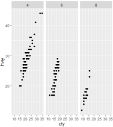
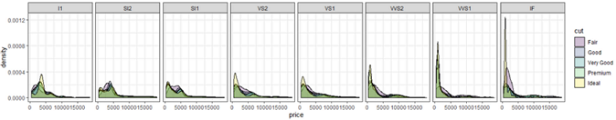
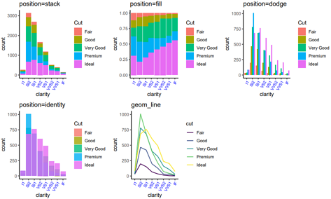
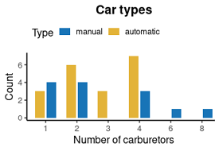
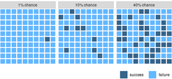
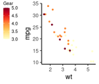
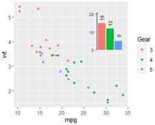
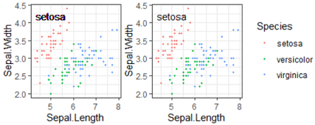

R绘图 使用ggplot2进行高级绘图
要点: lattice和ggplot2包极大地扩展了R绘图的范畴，提高了图形的质量。[R In Action(2nd Edition), Chapter19]
R作图的目的：更好地理解数据，并能够与他人沟通这些理解方式。
几个常见图表的R画法: Rpubs: R 原生绘图函数实例 basic plot
几个常见图表的R画法: Rpubs: 画图挑战赛
官网 reference 应该是你入门后参考最多的网站。其次是应该打印出来贴墙上的小抄 ggplot2-cheatsheet.pdf。
甚至有人写了 python版的ggplot包。
"一张统计图形就是从数据到几何对象(geometric object, 缩写为geom, 包括点、线、条形等)的图形属性(aesthetic attributes, 缩写为aes, 包括颜色、形状、大小等)的一个映射。此外, 图形中还可能包含数据的统计变换(statistical transformation, 缩写为stats), 最后绘制在某个特定的坐标系(coordinate system, 缩写为coord)中, 而分面(facet, 指将绘图窗口划分为若干个子窗口)则可以用来生成数据中不同子集的图形。"
----- Hadley Wickham
目标: Adam et al, Nature 2017 Fig3 c


#数据为scRNAseq表达量，想看若干基因在不同cluster内的表达情况:
> head(df) #5万行， 3列
seurat_clusters variable value
1480 2 PTPRC 0.0000000
1483 2 PTPRC 0.3043327
> table(df$seurat_clusters)
1 2 3 4
152076 141873 122417 115729
> table(df$variable)
CCR7 CD34 CD3D CD4 CD68 CD79A CD8A COL1A1 CSF1R CSF3R EPCAM FPR1
28005 28005 28005 28005 28005 28005 28005 28005 28005 28005 28005 28005
GZMA LYZ MS4A1 PTPRC S100A9 TNFRSF17 TPSAB1
28005 28005 28005 28005 28005 28005 28005
#
#1. 正常小提琴图
df$seurat_clusters=as.factor(df$seurat_clusters) #一定要注意，分类变量必须是因子！大坑！！
str(df)
p = ggplot(df,aes(x=variable,y=value,fill=variable))+
geom_violin(scale = "width",colour="white") + #小提琴图，边框颜色白色，fill属性为填充颜色
facet_wrap(seurat_clusters~ . ,strip.position = "left",ncol = 1) + #分面，多行
theme_bw() + #白主题
theme(panel.grid = element_blank(), #不要背景
axis.ticks.y=element_blank(), #不要y坐标刻度
axis.text.x = element_text(angle=45,vjust=1,hjust = 1), #x文字倾斜45度
axis.text.y = element_blank(), #不要y轴文字
legend.position = "none", #不要图例
panel.spacing=unit(0,"cm"), #分面间距为0
strip.text.y = element_text(angle = 180),
strip.background = element_blank())
print(p)
#2. 旋转小提琴图
p2 = ggplot(df,aes(x=seurat_clusters,y=value,fill=variable))+
geom_violin(scale = "width",colour="white",alpha=0.85,width=1) +
coord_flip() + #guides(fill=FALSE)
facet_wrap(variable~.,nrow = 1, strip.position = "bottom") +
theme_bw() +
theme(
panel.grid = element_blank(), #不要背景网格
axis.text.x = element_blank(), #不要x坐标轴刻度文字
axis.text.y = element_text(size=15), #y坐标刻度字号
axis.title.y = element_text(size=15), #y标题字号
legend.position = "none", #不要图例
panel.spacing=unit(0,"cm"), #分面的间距
strip.placement = "outside", #分面标签位置
strip.text.x = element_text(angle=90,vjust=1,hjust = 1,size=15), #分面标签 文字倾斜; 字号
strip.background = element_blank() #分面标签 不要背景
)
print(p2)
# v0.2 facet_wrap 添加 scales ="free_x" 参数效果更佳。
# 附录:
# 数据整理代码
gene_list1=c(
"CD3D","CD3E", "CD4", #naive CD4
'CD8A','CD8B') #CD8
cluster_list=levels(scRNA@meta.data$seurat_clusters)
#
df1=NULL;
for( cluster in cluster_list){
message(cluster)
rs=scRNA@meta.data
cid=rownames( rs[which(rs$seurat_clusters== cluster),] )
#
mtx=scRNA@assays$RNA@data[, cid]
for( gene in gene_list1){
df2=data.frame(value=as.numeric( mtx[gene, ]) )
df2$variable=gene
df2$seurat_clusters=cluster
#
df1=rbind(df1, df2)
}
}
rm(cluster, rs, df2)
dim(df1)
head(df1)
概率密度曲线最重要的参数是 bw=，bandwidth 越小，峰越尖锐，越接近hist()图。示例: density plot and bandwidth


# 例1 概率密度曲线
ggplot(iris, aes(x = Sepal.Length)) + theme_bw()+
geom_density(aes(color = Species))
# 例2 画频率分布图，使用 y=..density..
df=data.frame(
cid=seq(1,22),
group=c(rep("A",7), rep("B",15) ),
num=c(0.3,0.16, 0.1, 0.2, 0.3, 0.4, 0.1, 0.1, 0.1, 0.2, 0.1, 0.1,
0.1, 0.2, 0.3, 0.4, 0.5,0.1, 0.1, 0.2, 0.2, 0.1 )
) # 两组数据(编号1,2)，每组污染指数
head(df)
#df$group=factor(df$group,levels=c('B','A'))
df$group=factor(df$group,levels=c('A','B'))
# 使用ggplot2 画频率分布直方图，和概率密度曲线
library(ggplot2)
ggplot(df,aes(x=num,y=..density..,fill=group))+
geom_histogram(position = "dodge",binwidth = 0.1)+ #画线
geom_text(aes(label=round(..density..,1)),position = "dodge",
stat="bin",binwidth = 0.1,vjust=-0.3)+ #曲线上数字是高度，是频数/总数/组距
geom_line(stat="density", aes(color=group))+ #只有线条
#geom_density( aes(color=group), alpha=0.5)+ #曲线下面积是1,带阴影，带边框
scale_color_manual(values=c('red','green'))+
theme_bw()#+
xlim(-0.1,0.6) #显示概率密度曲线两端
# 每组频率=频数/总和
table(df$group)
# A B
# 7 15
#
summary(df$num)
#Min. 1st Qu. Median Mean 3rd Qu. Max.
#0.100 0.100 0.150 0.195 0.225 0.500
#
df[which(df$group=='A'),]$num
df[which(df$group=='B'),]$num
# 第一个bin总是 [min, min + binwidth/2)，之后开始正常
nrow(df[which(df$num >= 0.1 & df$num<0.15 & df$group=="A"),])/7/0.1; #4
nrow(df[which(df$num >= 0.1 & df$num<0.15 & df$group=="B"),])/15/0.1; #5.3
#
nrow(df[which(df$num >= 0.15 & df$num<0.25 & df$group=="A"),])/7/0.1; #2.8
nrow(df[which(df$num >= 0.15 & df$num<0.25 & df$group=="B"),])/15/0.1; #2.7
#
# ...
#
## R原生绘图函数 A 一致
hist( df$num[which(df$group=='A')], n=20 )
plot( density(df$num[which(df$group=='A')], n=100) )
#plot( density(df$num[which(df$group=='A')]), xlim=c(0.1,0.5), ylim=c(0,6) )
# R原生绘图函数 B 一致
hist( df$num[which(df$group=='B')], n=20 )
plot( density(df$num[which(df$group=='B')]) )
# 查看A的值
df$num[which(df$group=='A')]
table(df$num[which(df$group=='A')])
# 查看B的值
df$num[which(df$group=='B')]
table(df$num[which(df$group=='B')])
# ggplot2 v3.2.1
频率分布直方图(使用breaks参数，设置分段点)

score=c(122,134,179,118,90,290,235,356,401,404,407,410,
413,416,419,422,425,428,431,434,437, 750)
hist(score, breaks=c(0,199.5,399.5,599.5, 799.5))
library(ggplot2)
#使用频数
g1=ggplot(NULL, aes(x=score, y=..count..))+theme_classic()+
geom_histogram(fill="#E5522C", breaks = c(0,199.5,399.5,599.5,799.5))
#使用频率
g2=ggplot(NULL, aes(x=score, y=..count../sum(..count..)*100 ))+theme_classic()+
geom_histogram(fill="#244264", breaks = c(0, seq(199.5,799.5,200) ) )+
labs(y="Frequency(%)")
library(gridExtra)
grid.arrange(g1,g2,nrow=2)
under coding ...
ggplot2提供了2种分面系统，根据需要选择.

library(ggplot2)
dim(mpg) #234 11
str(mpg)
head(mpg)
# manufacturer model displ year cyl trans drv cty hwy fl class
#
#1 audi a4 1.8 1999 4 auto(l5) f 18 29 p compact
#2 audi a4 1.8 1999 4 manual(m5) f 21 29 p compact
table(mpg$drv)
#取子集: 三种气缸cyl(4,6,8),2种驱动轮drv(4,f)
mpg2=subset(mpg, cyl != 5 & drv %in% c('4','f') ) #todo 值得学习
dim(mpg2) #205 11
#
# 画图
# x:city miles per gallon; 每加仑城市英里数;
# y:highway miles per gallon 每加仑高速英里数；
g=ggplot(mpg2, aes(cty, hwy))+geom_point()
g
#1.封装分面: 先搞一个长队列，再根据行列设置断开
g+facet_wrap(~cyl, nrow=2) #指定2行。如果设置nrow=1，则图和facet_grid(.~cyl)效果一致;
g+facet_wrap(~cyl, ncol=2) #指定2列，和上一行效果一样。
#2.网格分面
#(1)加入第1个分类变量: 气缸数number of cylinders
g+facet_grid(.~cyl) #一行 3列 (这个目测效果更好，感觉八缸被蹂躏了) #见上图
g+facet_grid(cyl~.) #3行，一列
#看直方图更明显: 每个图的最高峰比较，4气缸每加仑油在城市跑得最远
ggplot(mpg2, aes(cty))+geom_histogram(binwidth=2)+
facet_grid(cyl~.)
#
#(2)加入第2个分类变量: 驱动方式。得到二维分面
g+facet_grid(drv~cyl) #二维的驱动轮越多
g+facet_grid(drv~cyl, margins=T) #添加边际图(相当于行列小计)
# 每个纯度分面下，不同切割的价格密度曲线。见下图
ggplot(diamonds, aes(x=price, fill=cut)) +
geom_density(alpha=0.25) +
facet_wrap(~clarity, nrow=1)+
theme_bw() #简化主题

position参数: R in action,P62. jitter对散点图有效，对柱状图虽然能画出来，但是没有意义。
基于table()统计结果的 barplot 百分数堆叠条形图(原生+ggplot2)。

library(ggplot2)
dim(diamonds) #[1] 53940 10
df=diamonds[1:10000, c('clarity', 'cut')]
dim(df) #[1] 10000 2
str(df) #一行是一个钻石，包括2个属性: 纯度、切割好坏; 都是因子型的分类变量;
head(df)
# clarity cut
#
#1 SI2 Ideal
#2 SI1 Premium
#3 VS1 Good
#4 VS2 Premium
#5 SI2 Good
#6 VVS2 Very Good
# 定义绘图函数，方便复用
draw1=function(position){
alpha=1; if(position=="identity"){alpha=0.8;}
#
print( paste(position,'; alpha=', alpha) )
ggplot(df, aes(clarity, fill=cut))+
#factor(cut,levels = c("Good","Ideal","Fair", "Very Good","Premium")) #改变图例的顺序
geom_histogram(stat="count", position=position, alpha=alpha)+
theme_classic()+#简化背景
theme(axis.text.x=element_text(angle=60, hjust=1,size=8,color="blue") )+ #坐标轴文字旋转60度。
scale_fill_discrete('Cut')+ #指定图例标题
labs(title= paste0("position=",position) ) #顶部标题
}
g1=draw1('stack'); #将图形元素堆叠起来
g2=draw1('fill') #同stack堆叠图形，并标准化高度到1
g3=draw1('dodge');g3 #避免重叠，并排放置(类似分面)
g4=draw1('identity') #不做任何调整。互相遮挡，效果不好。
#
g5=ggplot(df, aes(clarity, color=cut))+
geom_line(stat="count", aes(y=..count.., group=cut) )+
theme_classic()+#简化背景
theme(axis.text.x=element_text(angle=60, hjust=1,size=8,color="blue") )+
scale_fill_discrete('Cut')+ #指定图例标题
labs(title= "geom_line" )
# 保存pdf到硬盘
library(Cairo)
library(gridExtra) #一页多图
#
CairoPDF(file="position.pdf", width=10, height=6)
grid.arrange(g1,g2,g3,g4,g5,nrow=2)
dev.off();
Refer1(R cookbook),
Refer2(Bar plot using ggplot2),
geom_bar(stat = "identity", width=0.6, position = position_dodge(width=0.75))

# 模拟数据: x轴是汽化器的个数，颜色分类是自动挡/手动挡，y轴是该分类的汽车型号计数。
df1=table(mtcars$carb, mtcars$am); df1
df2=as.data.frame(df1);df2
colnames(df2)=c("carb", "am", "count")
df2
# 开始画图
library(ggplot2)
packageVersion("ggplot2")
# 设置颜色: am Transmission (0 = automatic, 1 = manual)
ggplot(df2, aes(x=carb, y=count, fill=am))+
geom_bar(stat = "identity",
width=0.6, #柱子显示宽度
position = position_dodge(width=0.75))+ #每个柱子占用的宽度，即便不显示内容
theme_classic(base_size = 12)+
scale_fill_manual( name="Type", #图例标题
breaks=c("1", "0"), #规定图例顺序：从上到下
labels=c("manual", "automatic"), #图例的新标签，与breaks一一对应
values=c("#1874B7", "#E3B338"), # 颜色，按照 breaks 规定的顺序
)+
labs(x="Number of carburetors", y="Count", title="Car types")+
theme(
plot.title = element_text(hjust=0.5, face="bold"), #标题居中、黑体
legend.position = c("top"), #方位: 上下左右共4个
legend.justification = "left", #靠左对齐
legend.key.height = unit(2, "mm"), #控制图例 小图的高度
legend.key.width = unit(5, "mm"), #控制图例 小图的宽度
)

hjust 控制水平对齐和 vjust 控制垂直对齐。
取值[0,1]之间, 0表示左对齐, 1表示右对齐
td=expand.grid(
hjust = c(0,0.5,1),
vjust = c(0,0.5,1),
angle = c(0,45,90),
text =c('Text')
)
td
ggplot(td,aes(x = hjust,y = vjust))+
geom_point()+ #theme_bw()+
geom_text(aes(label = text,angle = angle,hjust = hjust,vjust = vjust))+
facet_grid(angle~.)+
scale_x_continuous(breaks = c(0,0.5,1),expand = c(0,0.2))+
scale_y_continuous(breaks = c(0,0.5,1),expand = c(0,0.2))
目的：通过参数的设置完成对所绘制图形的legend的细节修改，得到自己所需要的图形。
library(ggplot2)
df1=mtcars
df1$gear=factor(df1$gear)
head(df1)
p=ggplot(df1, aes(x=gear, y=mpg, fill=gear ))+geom_boxplot();p
# 综合示例 legend at bottom-right, inside the plot
p + theme(legend.title = element_text(size=12, color = "salmon", face="bold"),
legend.justification=c(1,0),
legend.position=c(0.6, 0.05),
legend.background = element_blank(),
legend.key = element_blank()) +
labs(subtitle="Legend: Bottom-Right Inside the Plot")
| 目的 |
代码 |
解释 |
| 图例位置的相对点，配合legend.position使用 >>More |
p + theme(legend.justification = "top");
p + theme(legend.justification = c(0, 1)) |
可选: 'left','top', 'right', 'bottom'.
或坐标 c(x,y),x和y都是[0,1]之间，默认c(0.5,0.5) |
| 图例位置 |
p + theme(legend.position="bottom");
p + theme(legend.position = c(0.8, 0.2)) |
可选: 'left','top', 'right', 'bottom'.
或坐标值 c(x,y) |
| 更改legend 的title 字体颜色 |
p + theme(legend.title = element_text(colour="blue", size=10,
face="bold")) |
|
| 更改 legend labels 字体颜色 |
p + theme(legend.text = element_text(colour="red", size=10,
face="bold")) |
|
| 背景色 |
p + theme(legend.background = element_rect(fill="lightblue",
size=0.5, linetype=2,
color ="darkblue")) |
#fill设置legend box背景色，colour设置边框颜色 |
| 去除legend |
p + theme(legend.title = element_blank());
p + labs(color = NULL, title = col.by)
p + theme(legend.position='none') |
去除legend title
去除legend标题(方法2)
去除整个legend |
guides 设置specific aesthetic
使用guides()参数来设置或移除特定的美学映射(fill, color, size, shape等).
#因子变量cyl和gear映射为点图的颜色和形状，qsec决定点的大小。
#更多用法参考官方文档
df2=mtcars
df2$gear=as.factor(df2$gear)
df2$cyl=as.factor(df2$cyl)
p2 <- ggplot(data = df2,
aes(x=mpg, y=wt, color=cyl, size=qsec, shape= gear))+
geom_point()
# 不设定specific aesthetic时候
p2
#(2)设置多个legend的位置
# 更改 legend position
p2 +theme(legend.position="bottom") #底部，一横排
# Horizontal legend box
p2 +theme(legend.position="bottom", legend.box = "") #底部，三横排
# (3)设置multiple guides顺序, The function guide_legend() is used
p2+guides(color = guide_legend(order=1),
size = guide_legend(order=2),
shape = guide_legend(order=3))
# (4) 去除某个图例 particular aesthetic
# 通过设置FALSE，可不展示对应的legend
p2+guides(color = FALSE)
# 也可以使用scale_xx.函数去掉特定的legend
# Remove legend for the point shape
p2+scale_shape(guide=FALSE)
# Remove legend for size
p2 +scale_size(guide=FALSE)
# Remove legend for color
p2 + scale_color_manual(values=c('#999999','#E69F00','#56B4E9'), guide=F)
注意：分类变量一定要手动转为因子，自动转换的很可能不是预期的顺序。 df$xx=factor(df$xx, levels=('z1', 'a2', 'd3'))
目标: Eldad et al, nar 2019, Fig3C
modifyingThemes.pdf

########### 画饼图
#数据
x=c(40,20,3,26,10,45)
x2=c('z1','d2','n3','b4','a5','c6')
x3=paste0(x2, "(",x,', ',round(x/sum(x)*100,2),"%)" );x3
x4=(paste0(x, "\n",round(x/sum(x)*100,2),"%" ) );x4
###################
# 原生R函数 画饼图
pie(x)
pie(x,labels=x3) #加上百分比
pie(x,labels=x3,edges = 20) #最外圈的多边形的边的个数(默认200)
pie(x,labels=x3,radius = 0.5) #圈是画在一个正方形内的[0,1](默认0.8)
pie(x,labels=x3,clockwise=T) #顺时针开始画
#lty : 每个扇区的线型（0：无，1：实线；2：短划线；3：点线；4：点划线；5：长划线；6：双划线;）
pie(x,labels=x3,clockwise=T, lty =0)
pie(x,labels=x3,clockwise=T, lty =0:5)
#border : 每个扇区的边框颜色。
pie(x,labels=x3,clockwise=T, border ="red")
pie(x,labels=x3,clockwise=T, border =c(1:6))
#自定义颜色
library(RColorBrewer)
#brewer.pal.info # 查看有哪些调色板
col6=RColorBrewer::brewer.pal(n = 6,name = "Set2")
barplot(c(1:6),col=col6) #预览颜色
#
pie(x,labels=x3,clockwise=T, col=col6)
#想要图例横着排序，只能提前对图例排序
# https://stackoverflow.com/questions/39552682/base-r-horizontal-legend-with-multiple-rows/39552713
Nfact = 6
Nrows = 2
Ncols = ceiling(Nfact / Nrows)
MyOrder = matrix(1:(Nrows*Ncols), nrow=Nrows, ncol=Ncols, byrow=T)
#fig1
pie(x, #数据
labels=x4, #标签
clockwise=T, #顺时针方向
col=col6, #扇形颜色
main="Pie Plot of XX",
lty=0) #扇形描边，去掉
#legend(x=-1,y=-1.2, #"right", #图例位置
legend("bottom",
inset=-0.2, #图例为关键词时，inset = 分数 设置其相对位置(-向下，+向上)
legend=x2[MyOrder], #图例文字
fill=col6[MyOrder], #图例填充颜色
#box.lty=1, #图例最外大方框
bty="n", #不要图例边框
#title.adj=0, #图例标题的相对位置，0.5为默认，在中间。0最左，1为最右。
#title="Type",#图例标题
cex=1, #字体大小倍数
#horiz = T,#横着显示，会覆盖掉ncol
ncol=3, #图例显示为n列
#byrow=T, #??
xpd=T, #有这句话才能显示在图外
x.intersp=0.5, #图例中文字离图片的水平距离
#y.intersp=1, #图例中文字离图片的垂直距离
text.width=0.3, #两个图例之间的距离
#merge = TRUE,
#title="Type", #图例标题
border=NA #不要图例小方块描边
)
#
###################
## 使用ggplot2包 画饼图
df=data.frame(
count=x, #计数
type=x2, #右侧图例的颜色
#tag=x3, #饼图上的图注
tag=x4
)
head(df)
# 去掉背景
library(ggplot2)
blank_theme = theme_minimal()+
theme(
axis.title.x = element_blank(),
axis.title.y = element_blank(),
axis.text.x = element_blank(),
axis.text.y = element_blank(),
panel.border = element_blank(),
panel.grid=element_blank(),
axis.ticks = element_blank(),
plot.title=element_text(size=14, face="bold",
hjust = 0.5)#大图标题居中
)
library(ggrepel) #geom_text_repel 比 geom_text新增功能：防止文字遮挡，自动连线点和标签
ggPie=function(df2){
#df=df2
g=ggplot(df2, mapping=aes(x="", y=count,fill=type))+
geom_bar(stat="identity",width=0.5)+
#coord_polar("y", start=0)+ #0度角起始角度
coord_polar(theta = 'y', direction = -1)+ #direction设置方向
#scale_fill_manual(values=col6)
scale_fill_brewer(palette="Dark2")+
blank_theme+
theme(legend.position="bottom", #图例显示位置
legend.margin=margin(t = -1.5, unit='line'), #图例整体上边距,缩减n行
legend.spacing.x = unit(2, 'pt'), #图例之间的x距离
legend.spacing.y = unit(2,"pt"), #图例之间的y距离
#plot.margin=unit(c(1,0,1,0),"lines"), #图形外围边框top,right,bottom,left
legend.box = "horizontal", #多图排列方式 'horizontal', 'vertical'
#legend.direction="horizontal", #图例排列方向 'horizontal', 'vertical'
#legend.title.align = 0.5, #？
#legend.key = element_rect(color = NA, fill = NA), #图例每个方块的边框
#legend.key = element_rect(size = 1,color = 'yellow' ),
#legend.key.size = unit(0.2, "cm"), #图例方块大小
legend.key.height=unit(1,"line"), #图例方块的高度
legend.key.width=unit(0.5,"line"), #图例方块的宽度度
#标签right距离，left距离
legend.text = element_text(margin = margin(r = 20, l=2,t = -3, unit = "pt")),
#legend.text = element_text(margin = margin(t = -5,unit='pt')), #图例文字上移-n,或下移n
legend.background = element_blank() )+ #去掉图例背景
#guides(fill = guide_legend(title = NULL))+ #去掉图例标题
guides(fill = guide_legend(ncol = 3, #图例几列
inset=-0.5,
byrow=T))+ #图例横着排？默认竖着排
labs(title="Pie plot (ggplot2)", #设置大图标题
#subtitle ="subtitles here, pie from count data.",
x="",y="")+
geom_text_repel(stat="identity",aes(x=1.2,y=x, label = tag), size=4, #饼图上的文字
position=position_stack(vjust = 0.5));g
#geom_text(stat="identity",aes(y=x, label = scales::percent(x/100)),
# size=4, position=position_stack(vjust = 0.5))
return(g)
}
#1 ggplot2 图例距离怎么调?
# https://stackoverflow.com/questions/11366964/is-there-a-way-to-change-the-spacing-between-legend-items-in-ggplot2
#2 ggplot2 主题（theme）设置
# http://www.sohu.com/a/224303554_466874
# https://www.sohu.com/a/135157372_572440
# https://stackoverflow.com/questions/17073772/ggplot2-legend-on-top-and-margin
#分类变量一定要是因子才行，否则顺序是分类变量的ascii码顺序，不一定符合预期
print(ggPie(df) )
#指定因子顺序
df_2=df
df_2$type=factor(df_2$type, levels=c('z1', 'd2', 'n3', 'b4', 'a5', 'c6'))
print( ggPie(df_2) ) #fig2
图略。使用对数坐标，自定义点的颜色。
library(ggplot2) # Seurat对象的meta.data画图
g1=ggplot(scRNA@meta.data, aes(nCount_RNA, nFeature_RNA, color = cellType)) +
geom_point(size = 0.1) +
# scale_color_brewer( type = "qual", palette = "Set2",name = "cell type") + #Spectral
# scale_color_manual( values = c( brewer.pal(8,'Set2'), "black",'red','blue'), name = "cell type") +
scale_x_log10() + scale_y_log10() +
theme_classic()+ #theme_bw() +
# Make points larger in legend
guides(color = guide_legend(override.aes = list(size = 6))) +
labs(x = "Total UMI counts", y = "Number of genes detected")
options(repr.plot.width=6, repr.plot.height=4.5) #jupyter 显示图片的宽高，单位和pdf()一致。
g1
library(patchwork)
plotc = plot1+plot2+ plot_layout(guides = 'collect') #公用图例
可以在主题中修改图例的文字标签和颜色。
本例: 直观展示概率，每种概率对应一个10*10的方块，高亮显示选中的方块。

#step1: 模拟数据
#dg = expand.grid(x = 1:10, y = 1:10)
library(ggplot2)
library(dplyr)
set.seed(101)
dg = expand.grid(ratio = c(0.01, 0.1, 0.4), x = 1:10, y = 1:10)
dg2 = dg %>%
group_by(ratio) %>%
mutate(value = {
n = n()
i = round(n * ratio[1])
sample(c(rep("S", i), rep("F", n-i)))
}) %>%
ungroup() %>%
mutate(label = paste0(round(100*ratio), "% chance") )
#set.seed(84524)
head(dg2)
# ratio x y value label
#1 0.01 1 1 F 1% chance
#2 0.1 1 1 F 10% chance
#step2: 画图
ggplot(data = dg2, mapping = aes(
x = x, y = y, fill = value)) +
geom_tile(color = "white", size = 1) + #热图
coord_fixed(expand = FALSE, clip = "off") + #x坐标轴比例固定，不能伸缩
scale_x_continuous(name = NULL, breaks = NULL) + #去掉x轴
scale_y_continuous(name = NULL, breaks = NULL) + #去掉y轴
scale_fill_manual( #给图例重新染色、命名
name = NULL, #图例标题
breaks = c("S", "F"), #原始图例标签
labels = c("success ", "failure"), #新图例标签
values = c( #指定图例颜色
"S" = "steelblue4",
"F" = "steelblue1"
),
guide = guide_legend(override.aes = list(size = 0))
) +
facet_wrap(~label) + #按label列分面
theme(
legend.position = "bottom", #图例放到底部
legend.direction = "horizontal",
legend.justification = "right", #图例靠右
plot.margin = margin(0, 0, 3.5, 0) # crop plot a little more tightly
)
方位，就是 legend.position，四个方位。legend.position = "top" #放到上面。
位置，在顶部时，靠左还是靠右。legend.justification = "left", #左对齐。四个边界的大小: legend.margin=margin(t = 0, r = 0, b = 10, l = 10, unit = "pt"), #move legend up a litter
宽高，就是图例本身的宽高。legend.key.width = unit(15, "mm"), legend.key.height = unit(2, "mm")
有时候，对于 geom_line(size=1) 线条的图例，还要增大图例的线宽: guides(color = guide_legend(override.aes = list(size = 13)));

# 修改图例的位置：整体向上移动一点
ggplot(mtcars, aes(wt, mpg, color=gear) )+
geom_point(size=1)+
scale_color_gradientn(name="Gear", colors=brewer.pal(9, "YlOrRd"))+ #自定义颜色
theme_classic(base_size = 12)+
theme(
legend.position = c("left"), #方位: 上下左右共4个
legend.text=element_text(size=8), #刻度字号
legend.title=element_text(size=8), #标题字号
legend.key.width = unit(4, "mm"), #control legend width and height
legend.key.height = unit(4, "mm"),
legend.margin=margin(t = 0, r = 0, b = 50, l = 0, unit = "pt"), #move legend up a litter
)
theme是解决图是否美观的一个工具，其与scale最大的区别在于不受数据左右。
先把scale做好，就是一张合格的图；再处理theme，则是一张出色的图。
# 先画主体图形，然后慢慢修饰的例子。
library(ggplot2)
g1=ggplot(iris, aes(x = Sepal.Length, y = Sepal.Width))+ #输入数据 x,y
geom_point(aes(color = Species))+ #散点图 设置颜色
geom_smooth(aes(color = Species, fill = Species))+ #平滑曲线
facet_wrap(~Species, ncol = 3, nrow = 1, scales="free_x")+ #分面，一行，x坐标范围自由
scale_color_manual(values = c("#00AFBB", "#E7B800", "#FC4E07"))+ #设置颜色
scale_fill_manual(values = c("#00AFBB", "#E7B800", "#FC4E07")) + #设置填充颜色
labs(x="Length of Sepal", y="Width of Sepal", title="Iris feature") #设置坐标轴文字
#fig1 默认主题，风格有爱，但不适合学术
g1
#fig2 使用预定义主题，顶部分面标题有黑边框
g1+theme_classic(base_size = 14) #统一调大字号
#fig3 分面标题无边框
g1+theme_classic(base_size = 14)+
theme(
strip.background = element_rect(fill = "white", colour = "grey", size = rel(0))
)
#fig4 开始炫技，尽可能多的修改主题，怎么丑怎么来
g1+ theme_classic(base_size = 14)+
theme(
#绘图区是最大的，里面包含若干个分面
plot.background = element_rect( color="red", linetype = 2, size=rel(2) ), #绘图区的边框红色虚线
plot.title=element_text (hjust=0.5, face="bold.italic"), #绘图区的标题居中，粗体斜体
# 坐标轴加粗
axis.ticks = element_line(size=rel(2)), #刻度线加粗
axis.line = element_line(size=rel(2)), #轴线加粗
axis.text = element_text(face="bold"), #字体加粗
# 分面的标题
strip.background = element_rect(fill = "white", colour = "grey", size = rel(1.5)), #分面的背景框 灰色
strip.text = element_text(colour="black", face="bold", size = rel(1.5)), #分面的文字 大字号
panel.background = element_rect(fill = "#FFFF0030", colour = "green"), #面板背景填充黄色，绿边框
#图例
#legend.box = "vertical", # vertical / horizontal 为什么不竖直显示呢？
legend.position = "bottom", #放在底部
legend.title = element_text(color="blue", face="italic"), #图例标题蓝色 斜体
legend.margin=margin(t = -10, r = 0, b = 0, l = 0, unit = "pt"), #整个图例的周围边距
#legend.key.size = unit(1, "cm"), #增加图例中小图的大小，但不影响间距
legend.spacing.x = unit(5, 'pt'), #一个颜色块和对应文字的距离
#legend.box.spacing=unit(50, 'pt'), #2个图例之间的距离
legend.text = element_text( margin = margin(r = 20, t=5), #每个小盒子的外间距
size=rel(0.8), color="purple" ), #图例字号是原来*0.8，紫色
legend.key = element_rect(size = 10,color = '#FF00FF22' ), #图例小图背景 淡紫色
legend.key.width = unit(0.5, "cm"), # 控制图例每个小图的大小
legend.key.height = unit(1, "cm"), #单位可以是pt, cm, line
)+
#guides(color=guide_legend(ncol=1)) #注意：这里要和aes中的 color / fill 一致
guides(
fill="none", #remove some guides
color = guide_legend(title="NewTitle2", ncol = 2, byrow = TRUE, size="None"),
) #图例分2列显示
上述代码生成的图如下: 第一排图1和3，第二排图4。图2略。
小技巧: theme() 参数繁多，其实只需要了解，不用刻意去记！
(1) 查看帮助: R控制台输入 ?theme 回车即可以看到theme函数的大量参数；
(2) 还可以查看该函数的定义: 在Rstudio的R脚本中输入 theme，然后ctrl+单击该函数名。
设置 theme() 可以实现更改图形外观的大多数要求。这些参数有几大类(等号左侧): line 所有线条, rect 所有方框, text 所有文字, title 所有标题(plot, axes, legends，继承自 text), aspect.ratio 面板比例, axis系列(坐标轴), legend系列(图例), panel系列(画图面板)，plot系列(画图区，可以包含多个分面)，strip系列(分面标题)。有四种主要的定义方式(等号右侧)：
| 类 型 | 解释 |
|---|
| element_text() | 使用element_text()函数设置基于文本的组件，如title,subtitle 和caption等。 |
| element_line() | 使用element_line()设置基于线的组件，如轴线，主网格线和次网格线等。 |
| element_rect() | 使用element_rect()修改基于矩形的组件，如绘图区域和面板区域的背景。 |
| element_blank() | 使用element_blank()关闭显示的主题内容。 |
#1. 更改绘图背景和绘图区域
p + theme(panel.background = element_rect(fill = 'lightblue'),
plot.background=element_rect(fill="khaki"),
plot.margin = unit(c(3, 2, 1, 0.5), "cm")) + #设置绘图区域距离边的据类，上，右，下，左
labs(title="Modified Background", subtitle="Change Plot Margin")
#2. 更改主次网格线以及X,Y坐标轴 Change Plot Background elements
p + theme(
panel.grid.major = element_line(colour = "burlywood", size=1.5),
panel.grid.minor = element_line(colour = "tomato",
size=0.25,
linetype = "dashed"),
panel.border = element_blank(),
axis.line.x = element_line(colour = "darkorange", size=1.5, lineend = "butt"),
axis.line.y = element_line(colour = "skyblue", size=1.5)
) +
labs( subtitle="Change Major and Minor grid, Axis Lines")
#3. 删除主，次网格线，边框，轴标题，文本和刻度
p + theme(panel.grid.major = element_blank(), #主网格线
panel.grid.minor = element_blank(), #次网格线
panel.border = element_blank(), #边框
axis.title = element_blank(), #轴标题
axis.text = element_blank(), # 文本
axis.ticks = element_blank()) + # 刻度
labs(title="Modified Background", subtitle="Remove major and minor axis grid, border, axis title, text and ticks")
举一个设置背景颜色的例子。
ggplot_theme_system_cheatsheet.pdf
Original links of this picture
最大的绘图区是plot，然后又分成几个分面 画板 panel，panel的标题叫 strip。
图例整体叫 legend.background，里面的每个图文对中的小图叫 legend.key。
library(ggplot2)
df1=diamonds
df1$isDear=df1$price>5000
ggplot(df1, aes(carat, price, color=color, shape=isDear))+
geom_point(size=1)+
facet_wrap(.~cut)+
theme_bw()+
theme(
plot.background = element_rect(fill="lightyellow"), #整个大背景
plot.title = element_text(color="red", hjust=0.5), #标题水平居中
panel.background = element_rect(fill="orange"), #分面条带背景
panel.border = element_rect(color="red", size=2, linetype=4), #分面的面板
strip.background = element_rect(fill="pink", color="blue", size=2, linetype=3), #分面的标题
legend.box.background = element_rect(fill="purple", color="purple", size=2), #整个图例边框
legend.background = element_rect(fill="cyan"), #每个具体图例的背景，比如 color, shape
legend.key = element_rect(fill="yellow", color="red", linetype=2), #每个图例的每个小图
)+
labs(title="xx title")
theme_grey()为默认主题，theme_bw()为白色背景主题，theme_classic()为经典主题。
p + theme_bw() +
labs(subtitle="Change theme_bw")
library(ggthemes)
p + theme_economist() +
labs(subtitle="Change theme_economist")
#其他可选
#theme_economist theme_economist_white theme_wsj theme_excel theme_few
#theme_foundation theme_igray theme_solarized theme_stata theme_tufte
图略。输入主题名字，不加括号，回车就能看到该主题的定义，如: theme_bw。自定义主题就是模仿该函数定义的。
# 自定义主题
library(ggplot2)
theme_01 = function(..., bg='white'){
require(grid)
#theme_classic(...) + #基于预设主题
theme_bw(...)+
theme(
rect=element_rect(fill=bg), #背景色填充
plot.margin=unit(rep(0.1,4), 'lines'), #图片四周距离
#panel.background=element_rect(fill='transparent', color='black'),#白底黑边
#panel.border=element_rect(fill='transparent', color='transparent'),
panel.grid=element_blank(), #不要背景网格
axis.title = element_text(color='black', vjust=0.1), #坐标轴标题也就是变量名
axis.ticks.length = unit(-0.2,"lines"), #坐标刻度向内
axis.ticks = element_line(color='black'), #坐标轴刻度颜色
#axis.ticks.margin = unit(0.8,"lines"), #`axis.ticks.margin` is deprecated. Please set `margin` property of `axis.text` instead
# unit(c(t, r, b, l), unit)
axis.text.x = element_text(margin=margin(t=0.8, unit="lines") ), #x轴刻度向上到坐标轴0.8行
axis.text.y = element_text(margin=margin(r=0.8, unit="lines") ),
##legend.title=element_blank(), #去掉图例标题
#legend.key=element_rect(fill='transparent', color='transparent')
plot.title=element_text(face="bold", hjust = 0.5), #大图标题居中 #size=14,
legend.position="bottom", #图例显示位置
legend.margin=margin(t = -0.5, unit='line') #图例整体上边距,缩减n行
)
}
# 使用自定义主题
p=ggplot(mtcars, aes(disp, mpg, color=factor(gear) ))+geom_point();p
p+theme_01()+
scale_color_hue("gear_DIY")+
labs(title="mpg ~ disp")
Seurat4 R包中定义的几个主题，就是返回一个 theme(): NoAxes(), RotatedAxis()
NoAxes = function(..., keep.text = FALSE, keep.ticks = FALSE) {
blank = element_blank()
# 没有坐标轴
no.axes.theme = theme(
# Remove the axis elements
axis.line.x = blank, #x轴线 不要
axis.line.y = blank,
# Validate the theme
validate = TRUE, #//这个干什么的?
...
)
# 不要文字
if (!keep.text) {
no.axes.theme = no.axes.theme + theme( #theme()函数可加
axis.text.x = blank, #刻度文字
axis.text.y = blank,
axis.title.x = blank, #坐标轴标签
axis.title.y = blank,
validate = TRUE,
...
)
}
# 不要刻度线
if (!keep.ticks){
no.axes.theme = no.axes.theme + theme(
axis.ticks.x = blank, #刻度线
axis.ticks.y = blank,
validate = TRUE,
...
)
}
return(no.axes.theme)
}
# 测试
FeaturePlot(pbmc, features = c("CD8A", "CD8B")) & NoAxes()
# 旋转 x坐标轴文字的刻度
RotatedAxis = function (...) {
rotated.theme = theme(axis.text.x = element_text(angle = 45,
hjust = 1), validate = TRUE, ...)
return(rotated.theme)
}
# 测试
DotPlot(pbmc, features = c("CD8A", "CD8B", "CD3D", "CD79A", "NKG7")) + RotatedAxis()
图略: 第一行一个多，第二行2个图。
#造三个图
library(ggplot2)
a=ggplot(mtcars, aes( factor(gear), mpg, fill=factor(gear) ))+geom_boxplot()
b=a+geom_jitter()
set.seed(1)
c=ggplot(diamonds[sample(1:nrow(diamonds),1000),], aes(carat, price, color=cut))+geom_point(alpha=0.2);
#
library(grid)
outPath="D:\\Temp\\tmp\\"; #设置路径
pdf(paste0(outPath,"pdf/multyPic_onePage.pdf"),width=8,height=8) #设置子文件夹和文件名
#
grid.newpage()
pushViewport(viewport(layout=grid.layout(2,2)) ) #造一个网格，2行2列
#
vplayout=function(x,y){
viewport(layout.pos.row=x, layout.pos.col=y)
}
print(a,vp=vplayout(1,1:2)) #第1行第1和2列，图a
print(b,vp=vplayout(2,1)) #第2行第1列，图b
print(c,vp=vplayout(2,2)) #第2行第2列，图c
#
dev.off()
图略: 使用 gridExtra 包设置多行多列
library(gridExtra)
grid.arrange(p1,p2,nrow=1)
grid.arrange(plots[[1]]...plots[[10]],ncol=1,nrow=10)
图略: 使用 patchwork 包拼接 ggplot2 图形
library(patchwork) #拼接图形
library(ggplot2)
g1=ggplot(mtcars, aes(mpg, cyl) )+geom_point()+theme_minimal(); g1
g2=ggplot(mtcars, aes(mpg, disp) )+geom_point()+theme_classic(); g2
g1 | g2 # 左右
g1/g2 #上下
(g1 + g1 + g2) / (g1 + g2 + g2) #2行3列。
g1 / (g1 + g2 + g2) #2行3列；第1行就1个图，第2行3个图;
效果：主图是颜色分组的散点图，右上角显示每个分组的样本个数条形图。

#- 子图的背景要透明，否则覆盖后会很丑。
#- 指定子图位置使用 grid包的 viewport() 函数
library(ggplot2)
g=ggplot(mtcars, aes(mpg, wt, col=factor(gear) ))+
geom_point()+#theme_bw()+
scale_color_discrete("Gear");g
# barplot
rs=as.data.frame( table(mtcars$gear) );rs
# 3 4 5
# 15 12 5
barDf=data.frame(
x=rs$Var1,
y=rs$Freq
)
barDf$label=barDf$y #paste0(barDf$x, "gear: ", barDf$y)
barDf
p1=ggplot(barDf, aes(x, y, fill=factor(x)))+
geom_bar(stat = "identity")+
#scale_fill_manual("",values=c('red','blue'), labels=NULL)+
labs(title="", x="", y="")+
theme_classic()+
# 添加条形图顶部文本
geom_text( mapping=aes(x, y=y+3, label=label, angle=90 ), size=3 )+
scale_y_continuous(expand = c(0,0), #y轴与底部无间隙
limits=c(0,21), #y轴范围
breaks = seq(0,20,10))+ #y轴刻度
theme(legend.position="none", #不要图例
axis.text = element_text(size = rel(0.7)),#y轴字体
# no bg 背景透明，否则覆盖原图后很丑
panel.background = element_rect(fill = "transparent",colour = NA),
panel.grid.minor = element_blank(),
panel.grid.major = element_blank(),
plot.background = element_rect(fill = "transparent",colour = NA),
# no x axis
axis.ticks.x = element_blank(),
axis.line.x = element_blank(),
axis.text.x = element_blank());p1
print(p1)
#
library(grid)
print(g) #主图
# 子图定位
vp = viewport(width = 0.3, height = 0.5, #width\height表示插入图形的大小
x = 0.5,y = 1, #x\y表示插入图形相对于图片底层just的位置
just=c("left","top")) #按照左上角定位
print(p1,vp=vp)
保存图片
# 推荐保存时加上选项 useDingbats=F，图后期放到AI中打开时不变形、不乱码。
ggsave("diamonds.pdf", p, width=4, height=4, useDingbats=F)
#units = c("in", "cm", "mm"), 默认是英寸 in，dpi = 300
# 或更通用的保存方式:
pdf("pic1.pdf", width=4, height=4, useDingbats=F)
print(ggplotObj)
dev.off()
添加文字
ggplot2在图中添加文字的函数主要是geom_text和annotate。参考 cookbook-r Fonts, 怎样加标签、注释。
fontface：可设置粗体或斜体， “plain”默认普通值, “bold” 粗体、 “italic”斜体。
怎么防止文字锯齿、模糊?
This issue at github:
这种情况出现在只有一个标签、且不用df的时候。构建成df形式就好了。

library(ggplot2) #ggplot 3.2.1
p=ggplot(iris, aes(Sepal.Length, Sepal.Width, color=Species))+
geom_point(size=0.8)+theme_bw();#p
#(1) add text in picture, 文字不清晰
p+geom_text(aes(x=5, y=4.2, label="setosa"), color='black' )
#(2) add text in picture, 文字清晰
df1=data.frame( x=5, y=4.2, label="setosa" )
p+geom_text(data=df1, aes(x, y, label=label), color='black' )
#原因: 没有指定data，则使用上下文的iris，模糊是因为有150个文字互相覆盖。
#(3)只有一个文字的应该使用 annotate()
p+annotate(geom="text",x=5, y=4.2, label="setosa", color="black")
#(4)或者显示指定空df，而指定data=NULL不行。
p+geom_text(data=data.frame(), aes(x=5, y=4.2, label="setosa"), color='black' )
深入学习 ggplot2
彩蛋：使用 grid 在低层修改 ggplot2 对象，做出 ggplot2 不可能的效果，如圆角矩形图例，分面标题删三边仅下划线等。
微信: ggplot2高效实用指南 (可视化脚本、工具、套路、配色)
R语言实战 Chapter 19. Advanced graphics with ggplot2
R cookbook Graphs with ggplot2
官网: ggplot2 online documentation
ggplot2|详解八大基本绘图要素
https://mp.weixin.qq.com/s?__biz=MzIyNDI1MzgzOQ==&mid=2650394184&idx=1&sn=11f28193202b0714aadef44f5304eb9d
https://cengel.github.io/R-data-viz/data-visualization-with-ggplot2.html
http://www.cookbook-r.com/Graphs/Colors_(ggplot2)/
https://learn.gencore.bio.nyu.edu/ggplot/